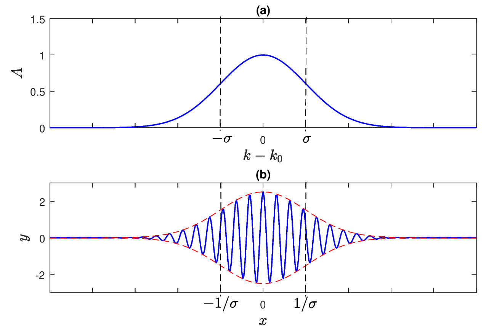

18 Wave packets
You find content related to this lecture in the textbooks:
- Coulson and Jeffrey (1977) section 92
Harmonic waves are not localised in \(x\). Instead they are periodic in \(x\) and and have an infinite number of crests and troughs. However, if you have ever thrown a pebble into a pond, you will know that real-world waves are not like that. Instead you will see packets with a finite number of crests and troughs moving away from the place where you dropped the pebble.
We will use the principle of superposition that we already discussed in lecture 4 that tells us that the sum of waves of a linear wave equation is also a solution. We have already found an uncountable family of harmonic plane wave solutions to the wave equation, parametrized by the wave number \(k\). We will use the harmonic plane waves in the complex exponential notation that we introduced in lecture 5: \[ y(x,t)=Ae^{i(kx-\omega(k)t)}. \] The superposition principle allows us not only to add a finite or countable number of solutions to obtain a new solution but it also allows us to integrate together an uncountable number of solutions by integrating rather than summing. It turns out that this makes it possible to construct a localised wave packet.
So we look at solutions where we give an amplitude \(A(k)\) to the harmonic wave with wave number \(k\) and then integrate over all wave numbers from \(-\infty\) to \(\infty\): \[ y(x,t)=\int\limits_{-\infty}^{\infty}A(k) e^{i(kx - \omega(k)t)} dk. \tag{18.1}\] This is again a solution. There is of course no guarantee that such an integral gives a finite result unless the coefficient function \(A(k)\) is chosen carefully to fall off sufficiently quickly towards positive and negative infinity. Rather than discussing the general theory, which you may meet in a future module on functional analysis, we are going to look at the most important example: the Gaussian wave packet.
18.1 Gaussian wave packet
Let the amplitude function \(A(k)\) be given by the Gaussian function \[ A(k)=e^{-\frac{(k-k_0)^2}{2\sigma^2}} \tag{18.2}\] for some real \(k_0\) and positive \(\sigma\). This function has a single peak at \(k=k_0\) and rapidly decays to zero away from it. The parameter \(\sigma\) is approximately the ‘half width’ of the peak. The sketch of this function is shown in Figure 18.1 a).
To understand what this wave packet looks like in space, we first look at \(t=0\), where we have \[ y(x,0)=\int\limits_{-\infty}^{\infty}e^{-\frac{(k-k_0)^2}{2\sigma^2}} \, e^{ikx} dk. \tag{18.3}\] To perform the integral we use a trick called “completing the square” whereby we move all \(k\) dependence into the square in the exponential. So we rewrite the exponent as follows: \[ -\frac{(k-k_0)^2}{2\sigma^2}+ikx = -\frac{(k-k_0-ix\sigma^2)^2}{2\sigma^2}+ik_0x-\frac{x^2\sigma^2}{2}. \] Using this in Eq. 18.3 gives \[ y(x,0)=e^{-\frac{x^2\sigma^2}{2}}e^{ik_0x}\int\limits_{-\infty}^{\infty}\exp\left(-\frac{(k-k_0-ix\sigma^2)^2}{2\sigma^2}\right) \, dk. \tag{18.4}\] The integral over the Gaussian simply gives \(\sqrt{2\pi}\sigma\), so that we have the solution \[ y(x,0)=\sqrt{2\pi} \, \sigma \, \exp\left(-\frac{\sigma^2 x^2}{2}\right) e^{ik_0 x} . \tag{18.5}\] The factor \(e^{ik_0 x}\) represents a harmonic wave, the other factors represent a varying amplitude (the envelope of the wave). The graph of the real part of Eq. 18.5 is shown in Figure 18.1 b.

Note that the half width of the wave packet is \(1/\sigma\), i.e. it is inversely proportional to the width of \(A(k)\). This means that that a more localised wave corresponds to a broader range in \(k\) and vice versa. This property has an important consequence in quantum mechanics – the uncertainty principle.
18.2 Moving wave packets and group velocity
If we have the standard wave equation, so that \(\omega(k) = c\,k\) with a constant \(c\) (no dispersion), then, according to Eq. 18.1, we have \(y(x,t)=f(x-ct)\) where \(f(x)=y(x,0)\) is given by Eq. 18.5. Thus, if there is no dispersion, the wave packet propagates with the (constant) wave speed \(c\) without changing its initial form.
The situation becomes more interesting if there is dispersion, i.e., if \(\omega(k)/k\) depends on \(k\). If we assume that \(A(k)\) is well localised, i.e. \(\sigma\) is sufficiently small, then only values of \(k\) in a small neighbourhood of \(k_0\) will contribute to the integral given by Eq. 18.1. With this in mind, we replace \(\omega(k)\) with its Taylor expansion about \(k=k_0\), keeping only two nonzero terms, i.e. \[ \omega(k)=\omega_0 + \alpha (k-k_0) + O(\vert k-k_0\vert^2), \] where \[ \omega_0=\omega(k_0), \quad \alpha = \frac{d\omega}{dk}(k_0). \] Then Eq. 18.1 with \(A(k)\) given by Eq. 18.1 yields \[\begin{split} y(x,t)&\approx \int_{-\infty}^{\infty} e^{-\frac{(k-k_0)^2}{2\sigma^2}+i(kx-\omega_0 t -\alpha(k-k_0)t)} \, dk \\ &= e^{-i(\omega_0-\alpha k_0 )t} \int_{-\infty}^{\infty} e^{-\frac{(k-k_0)^2}{2\sigma^2}} \, e^{ik(x-\alpha t)} \, dk . \end{split}\] We notice that the integral is similar to the one in Eq. 18.3 , just with \(x\) replaced by \(x-\alpha t\), so we can reuse the result from the previous section. In view of Eq. 18.5, we obtain \[ y(x,t)\approx\sqrt{2\pi} \, \sigma \, e^{-\frac{\sigma^2 (x-\alpha t)^2}{2}} e^{i(k_0 x -\omega_0 t)}. \tag{18.6}\]
The factor \(e^{i(k_0 x -\omega_0 t)}\) represents a harmonic wave travelling with the wave speed \(c=\omega_0/k_0\), while the other factors give us the envelope of the wave. Now, however, that envelope propagates not with the wave speed \(c\) but with the group velocity \(c_g\) where \[ c_g=\alpha=\frac{d\omega}{dk}(k_0). \] In general, the group velocity is different from the wave speed. It is equal to the wave speed only if there is no dispersion.
In the wave packet in Eq. 18.6 the shape of the envelope does not change over time as the wave packet travels through space. However, if we keep the quadratic term in the Taylor expansion of \(\omega(k)\), we see that there are some changes in the shape of the wave packet over time. The width of the Gaussian envelope will increase with time.
18.3 Strange experiences of a water strider
Imagine a water strider sitting on the surface of a pond (a water strider is an insect that is light enough to be able to sit on water). It sees a wave packet approaching, say with 6 noticeable wave crests. How often do you think the water strider will move up and down as that packet with its 6 wave crests moves past? The answer is 12! We’ll now derive this.
We have derived in Chapter 16 that the harmonic wave \(\eta=A\cos(kx-\omega t)\) is a solution describing a surface wave if \(\omega=\pm\sqrt{g\,k}\). The wave moves with the wave speed \[ c = \frac{\omega}{k}=\pm\sqrt{\frac{g}{k}}=\pm\sqrt{\frac{g\lambda}{2\pi}}. \] We see that longer waves move faster than shorter waves.
We observed in the previous subsection that a wave packet with wave numbers localised around wave number \(k\) moves with the group velocity. We can now calculate this group velocity for our surface waves: \[ c_g=\frac{d\omega}{dk}=\pm\frac12\sqrt{\frac{g}{k}}=\frac12 c. \] So for water waves the group velocity is half the phase velocity. This explains why the water strider moves up an down twice as often as one would have expected by looking at a snapshot of the wave packet.